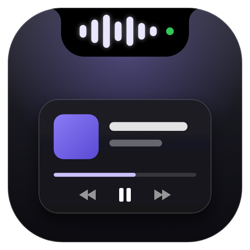

Windows Notch Settings
Windows Notch
Version …
General
Start with Windows
Show the notch automatically when you sign in.
Use the notch for volume keys
Volume keys show the notch's volume bar instead of the Windows pop-up.
Clipboard history
Keeps your last 15 copied texts in the panel. Memory only — never saved to disk; passwords are skipped.
Display
Show the notch on
With several screens, pick one or show a notch on each. A fullscreen app hides only its own screen's notch.
Keyboard shortcut
Open the notch with a shortcut
Opens or closes the panel on the screen your mouse is on.
Shortcut
Click the button, then press the keys you want.
Reset
Weather
Show weather in the panel
Current conditions with today's high and low, next to the clock.
City
Weather comes from Open-Meteo (free, no account). Only the city name you search and its coordinates are sent.
°C
°F
Updates
Update automatically
Checks GitHub for new versions, downloads them in the background and installs when you quit.
…
Check now